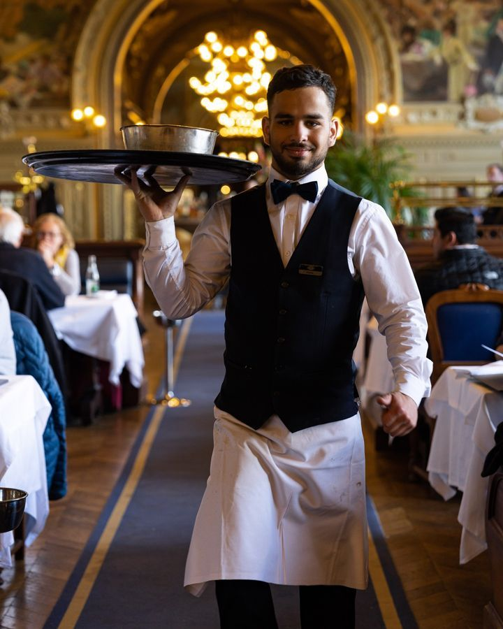
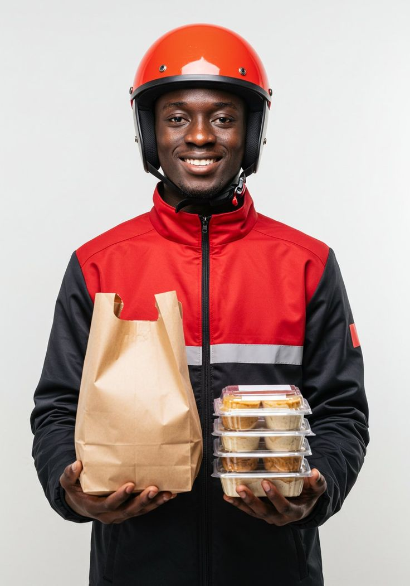
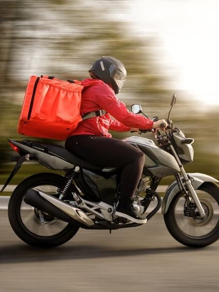

TERANGA FOOD🧑🏽🍳
Notre histoire, nos valeurs et notre passion pour la cuisine senegalaise

TERANGA FOOD est ne d'une passion profonde pour la cuisine senegalaise et d'un désir de partager les saveurs authentiques de notre culture avec le monde entier.
Fonde en 2015 par la famille Thioye au cœur de Saly, le restaurant s'est rapidement imposer comme une reference incontournable pour tous les amoureux de la gastronomie senegalaise.
TERANGA FOOD met en avant les saveurs du Senegal à travers des recettes traditionnelles et modernes. Notre objectif est d'offrir à chaque client une expérience culinaire conviviale et authentique.
Le mot Teranga signifie en wolof l'hospitaliter, la generositer et le partage. C'est l'essence même de notre etablissement.
Nous sélectionnons soigneusement chaque ingredient pour garantir des plats savoureux et nutritifs à chaque service.
Notre cuisine repond aux normes sanitaires les plus strictes. Proprete et rigueur sont au cœur de notre fonctionnement quotidien.
L'hospitalite senegalaise — la teranga — guide chacun de nos gestes. Chaque client est reçu avec chaleur et sincerite.
Nous preservons et honorons les recettes ancestrales transmises de generation en generation, gardiennes de notre identite culinaire.
Caissière principale — 7 ans d'expérience en gestion de caisse, rapidité de service et excellent sens du relationnel
Comptable principal — 12 ans d'expérience en gestion financière, suivi des comptes et organisation administrative

PDG fondateur — 18 ans d'expérience en gestion d'entreprise, leadership stratégique et développement de projets ambitieux

Chef cuisiniere principale — 15 ans d'experience en cuisine senegalaise traditionnelle
Experte en jus et glaces — 10 ans d'expérience en préparation de boissons fraîches, cocktails naturels et desserts glacés

Serveur principal — 8 ans d'expérience en service client, accueil chaleureux et excellente gestion des tables

Livreur principal — 1ans d'expérience en livraison rapide, ponctualité exemplaire et excellent sens du service client

Livreur principal — 2ans d'expérience en livraison rapide, ponctualité exemplaire et excellent sens du service client
Responsable de salle — Garant de l'accueil chaleureux et du service impeccable
Nous nous approvisionnons exclusivement aupres de producteurs locaux senegalais. Poissons frais du port de Dakar, legumes des marches de Sandaga, epices des jardins du Casamance — chaque ingredient raconte une histoire et soutient notre economie locale.